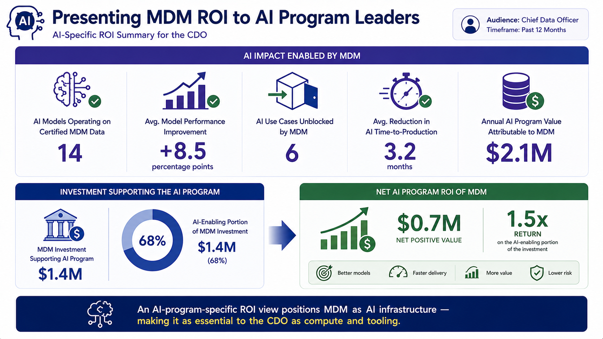
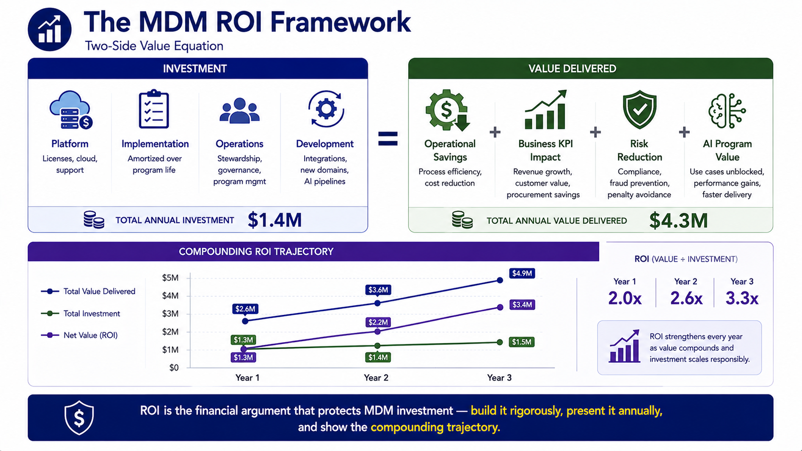

ROI Measurement
Module support notes
Handling Uncertainty in ROI Calculation
ROI calculations that present every value component with false precision — exact dollar amounts without confidence indicators or methodology documentation — invite challenge from finance teams who know that some of the underlying estimates are inherently uncertain. A more credible approach presents each value component with an explicitly documented confidence level and calculation methodology, and shows the total ROI as a range rather than a single point estimate.
An ROI of between 2.4x and 3.8x, with high confidence on the components that represent 70% of the value and documented medium-confidence methodology on the remainder, is a more defensible and ultimately more persuasive business case than a single ROI figure of 3.1x with no indication of how each component was calculated.
Tip
Acknowledging uncertainty with documented methodology is more credible than false precision — finance teams respect rigor, not optimism. Classify each ROI value component as high, medium, or lower confidence, and document the calculation methodology for each. Show the total as a range. This approach preempts the most common finance team challenge — "how did you calculate that?" — because the answer is already in the document.

ROI Measurement for AI Program Leadership
AI program leaders — Chief Data Officers, Chief AI Officers, heads of data science — respond most powerfully to ROI framing that positions MDM as AI infrastructure rather than data management overhead. An AI-specific ROI view that shows the number of models on certified data, the performance improvements achieved, the use cases unblocked, and the time-to-production acceleration provides a direct, program-relevant financial case that resonates with leaders who think in terms of AI portfolio value rather than data quality scores.
Organizations that present this view regularly to AI program leadership consistently report stronger CDO advocacy for MDM investment in budget discussions than those that present only the traditional operational and business KPI ROI components.
Note
An AI-program-specific ROI view positions MDM as AI infrastructure — making it as essential to the CDO as compute and tooling. The key metrics for this view: models currently operating on certified MDM data, average model performance improvement after migration, AI use cases unblocked in the past 12 months, reduction in AI time-to-production, and annual AI program value attributable to MDM data readiness compared to the MDM investment supporting the AI program.

ROI is the financial argument that protects MDM investment — build it rigorously, present it annually, and show the compounding trajectory that demonstrates why sustaining investment produces increasing returns over time.
